作品の制作 第２章
ここまで、歯車と花を組み合わせたものを制作してきましたが、コンセプトを少し変更することにしました。
今までのアイデアでは、製品としての魅力やストーリー性を考えた際に、やや疑問が残っていたのです。
そこで考えたのが、風ぐるまと風見鶏を合体させ、花の形を模した「風見花（仮）」 です。
花が回転するという点はそのままに、自然の力を利用し規則性のない動きをつけることで、調和と癒しをもたらすアイテムとして完成度があがるのではないかと考えました。
まず、風車などの風を受けて回転するものの形を参考に、PLAで試作を行いました。
こちらが試作品第１号ですが、残念ながら失敗に終わりました。
直径は約15cmほどのサイズで、印刷に６時間ほど要しました。これが裏目に出ます。
プロペラのような造形を目指しながら、サポートをなるべく減らそうとした造形があだとなってしまいました。
重量が必要以上にかさんでしまっただけでなく、あまり風力を受け止めている感じが少ないです。
そこで、基本設計を流用しつつ、より風を受け止めやすいように改善を施した、試作品第２号を制作しました。
第１号では埋めていた花弁の部分に大きなくぼみを入れ、風を受け止め回転しやすそうな形状に変更しました。
謎に自信があったのですが、あえなく撃沈。多少は回転しそうな兆しが見えましたが、あくまでも兆しだけでした。
やはり、サポートを忌避して花弁の底面を平らにしてしまった影響で、風の流れが乱れているのではないかと反省しました。
ちなみに、この２つの試作品を通して、中心となる軸はそれなりに小さめの方が回転しやすい ことに気が付きました。
今後は、穴の直径と軸の直径を２mm以上開けるようにしていきます。
ここまでの試作やインターネットでの情報収集を踏まえて、風を受ける面積を大きくしつつ、重量など回転の抵抗を減らすことが重要だといえます。
そこで、ここまでの形状から趣旨を変えて、横からの風をメインに拾う形を試してみることにしました。
花びらの形状はハリボテにして、その背面に風を受けるパーツを垂直に生やす作りにしてみました。
これまでのものより見栄えはしませんが、比較的少量の風でも回転しやすくなったように感じます。
メインの花びらパーツの制作に並行して、風見花を形成するそれ以外のパーツも作っていきます。
全体的に花をイメージして、土台を植木鉢にするなどちょっとした遊び心も入れたり入れなかったり。
パーツ数は多くなってしまいますが、サポートを必要としないシンプルな造形になるよう注意しました。
土台の植木鉢と回転する茎のパーツです。
上部に取り付ける風受けの力を受けて、風見花全体が回転するようにします。
現段階で必要になる全パーツをPLAで印刷し終えました。
組み立てるとこのような全体像になります！
重量のバランスもよくしっかりと自立してくれます。全高はおよそ20cmですが気持ちもう少し大きくても大丈夫そうです。
うちわや扇風機などの広範囲で風を送ると、花びら部分はあまり動きませんが、茎の部分は回転してくれます。
これからは、主に花びら部分の改善に着手していきます。
今までのアイデアでは、製品としての魅力やストーリー性を考えた際に、やや疑問が残っていたのです。
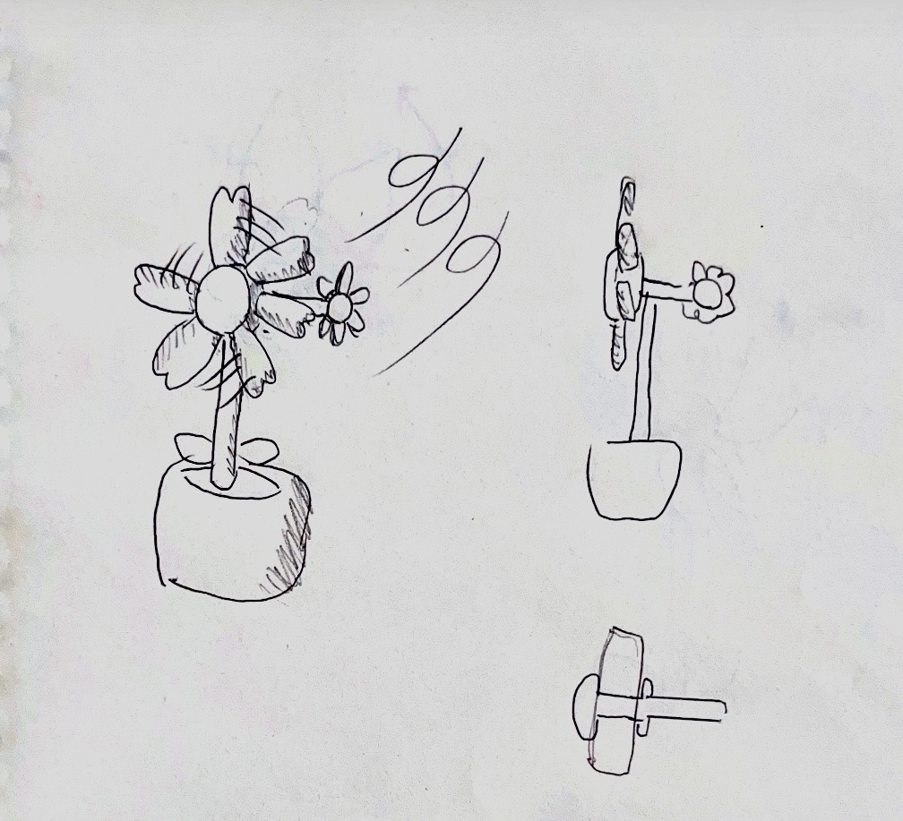
そこで考えたのが、風ぐるまと風見鶏を合体させ、花の形を模した
花が回転するという点はそのままに、自然の力を利用し規則性のない動きをつけることで、調和と癒しをもたらすアイテムとして完成度があがるのではないかと考えました。
まず、風車などの風を受けて回転するものの形を参考に、PLAで試作を行いました。
こちらが試作品第１号ですが、
直径は約15cmほどのサイズで、印刷に６時間ほど要しました。これが裏目に出ます。
プロペラのような造形を目指しながら、サポートをなるべく減らそうとした造形があだとなってしまいました。
重量が必要以上にかさんでしまっただけでなく、あまり風力を受け止めている感じが少ないです。
そこで、基本設計を流用しつつ、より風を受け止めやすいように改善を施した、試作品第２号を制作しました。
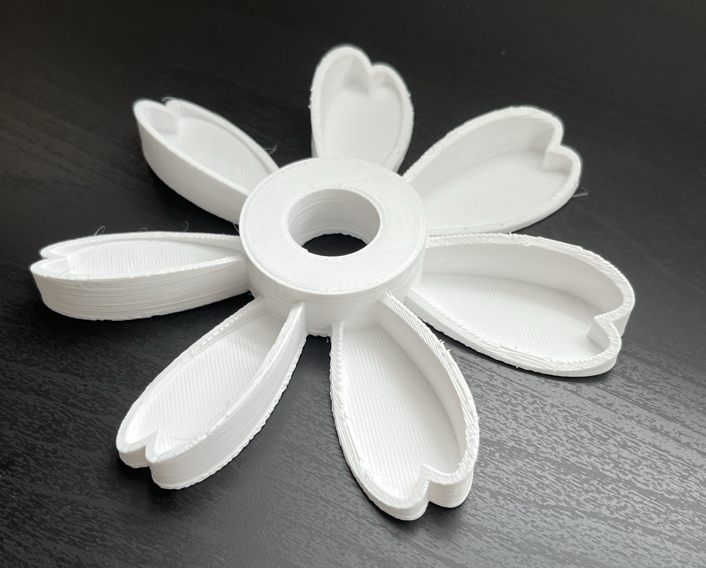
第１号では埋めていた花弁の部分に大きなくぼみを入れ、風を受け止め回転しやすそうな形状に変更しました。
謎に自信があったのですが、あえなく撃沈。多少は回転しそうな兆しが見えましたが、あくまでも兆しだけでした。
やはり、サポートを忌避して花弁の底面を平らにしてしまった影響で、風の流れが乱れているのではないかと反省しました。
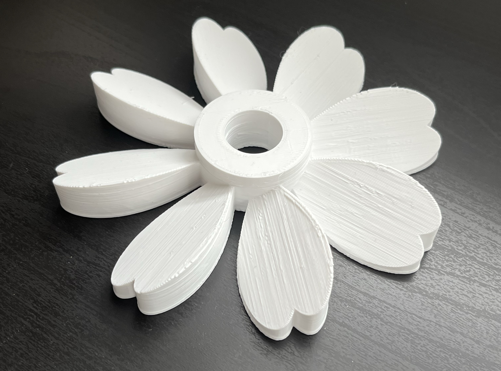
ちなみに、この２つの試作品を通して、中心となる軸はそれなりに
今後は、穴の直径と軸の直径を２mm以上開けるようにしていきます。
ここまでの試作やインターネットでの情報収集を踏まえて、風を受ける面積を大きくしつつ、重量など回転の抵抗を減らすことが重要だといえます。
そこで、ここまでの形状から趣旨を変えて、横からの風をメインに拾う形を試してみることにしました。
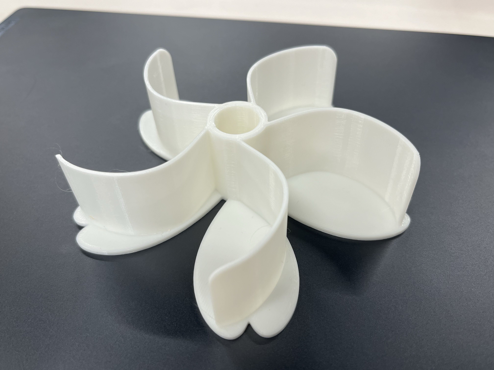
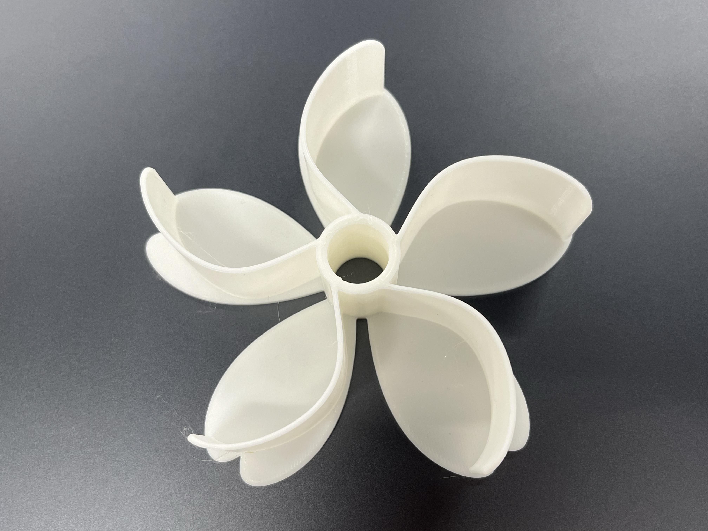
花びらの形状はハリボテにして、その背面に風を受けるパーツを垂直に生やす作りにしてみました。
これまでのものより見栄えはしませんが、比較的少量の風でも回転しやすくなったように感じます。
メインの花びらパーツの制作に並行して、風見花を形成するそれ以外のパーツも作っていきます。
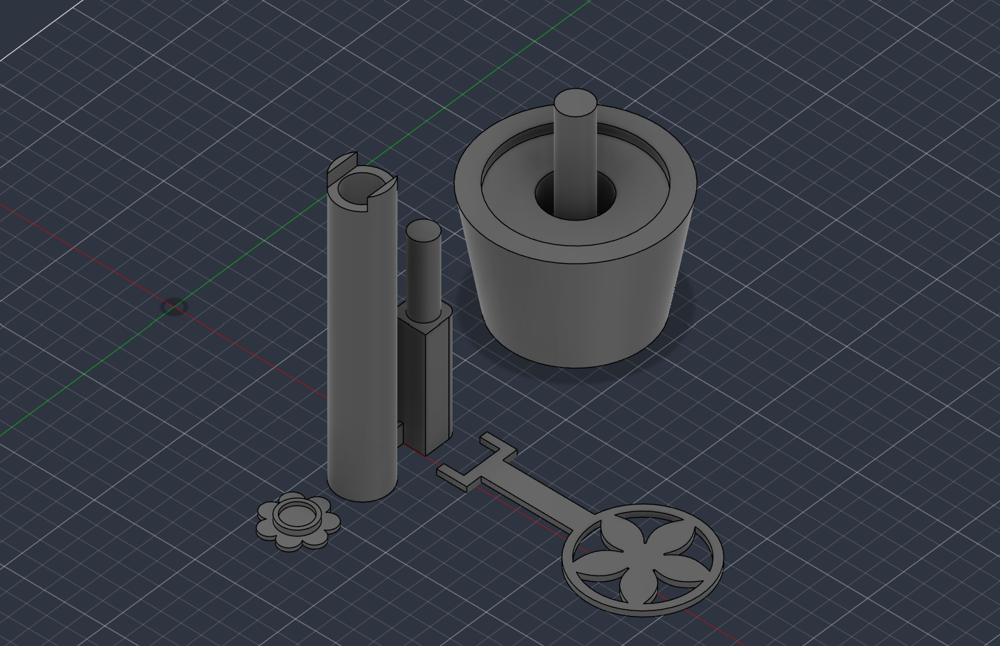
全体的に花をイメージして、土台を植木鉢にするなどちょっとした遊び心も入れたり入れなかったり。
パーツ数は多くなってしまいますが、サポートを必要としないシンプルな造形になるよう注意しました。
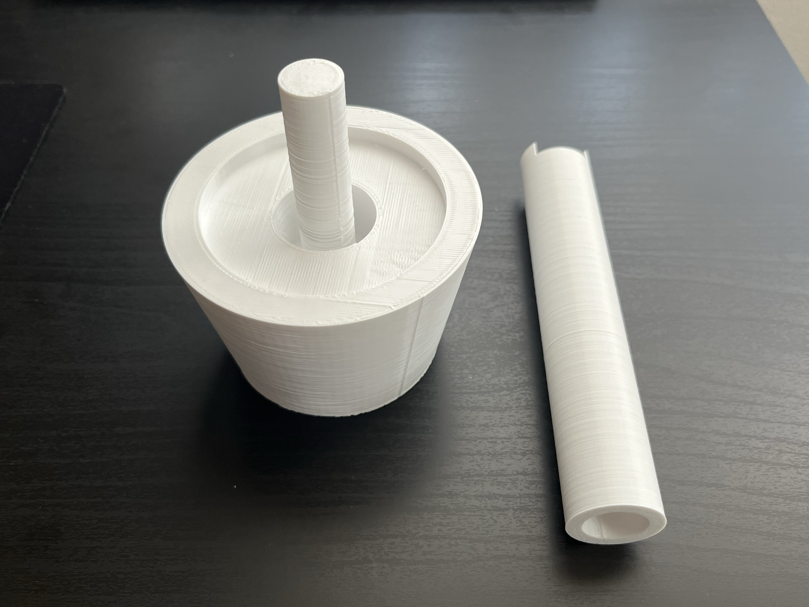
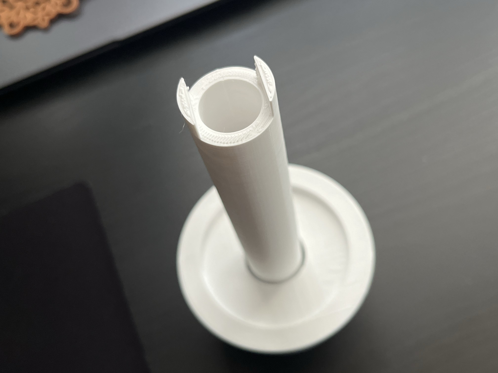
土台の植木鉢と回転する茎のパーツです。
上部に取り付ける風受けの力を受けて、風見花全体が回転するようにします。
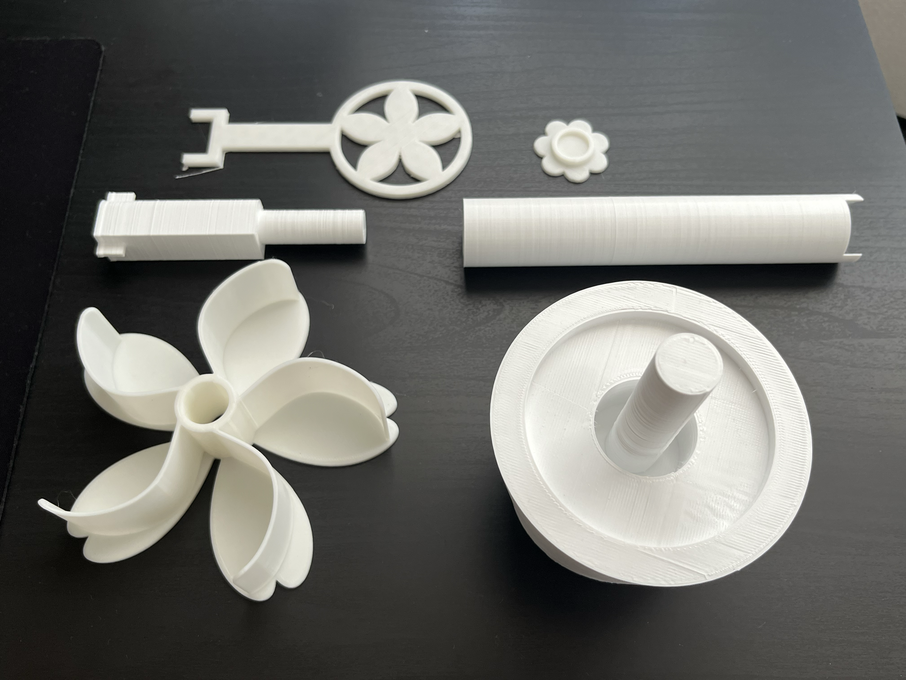
現段階で必要になる全パーツをPLAで印刷し終えました。
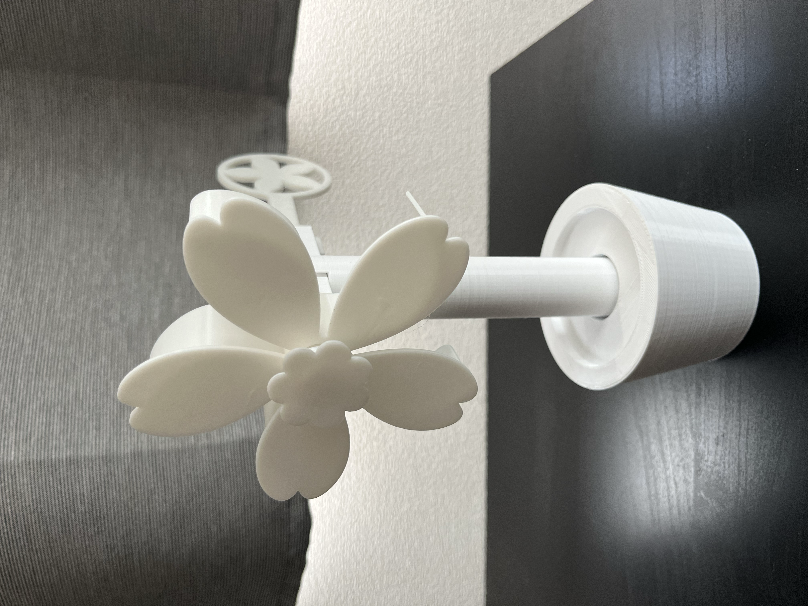
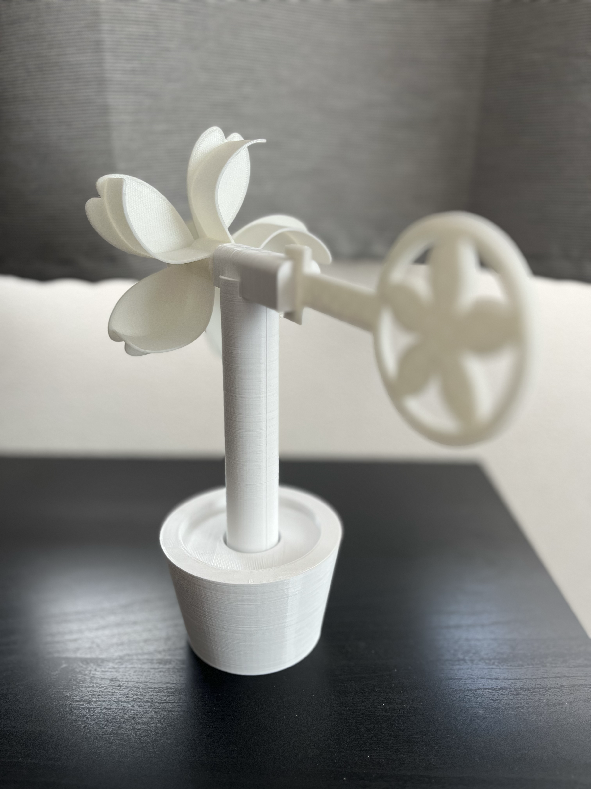
組み立てるとこのような全体像になります！
重量のバランスもよくしっかりと自立してくれます。全高はおよそ20cmですが気持ちもう少し大きくても大丈夫そうです。
うちわや扇風機などの広範囲で風を送ると、花びら部分はあまり動きませんが、茎の部分は回転してくれます。
これからは、主に花びら部分の改善に着手していきます。